Diseñar
para ser sentido
y valorado,
no solo visto.
Haz clic para empezar
Diseño experiencias interactivas, sistemas de diseño y flujos de trabajo con IA — moviéndome entre investigación UX, diseño de juegos y medios inmersivos,
de Medellín a Wellington.
- Sistemas de diseño
- Flujos con IA
- Investigación UX
- Diseño de juegos
- Medios inmersivos
MedellínColombiaEAFIT
WellingtonAotearoa Nueva ZelandaTe Herenga Waka
Proyectos académicos y personales
Trabajos de mi carrera de Diseño Interactivo en EAFIT, en Medellín, y de mi semestre de intercambio en Te Herenga Waka — Victoria University of Wellington. En EAFIT siempre trabajé con compañeros, así que cada proyecto dice cuál fue mi parte. Las habilidades de cada tarjeta son las que usé, más las que aprendí del propio proyecto y de mis compañeros. Mi investigación más allá del programa tiene su propia franja más abajo.
-
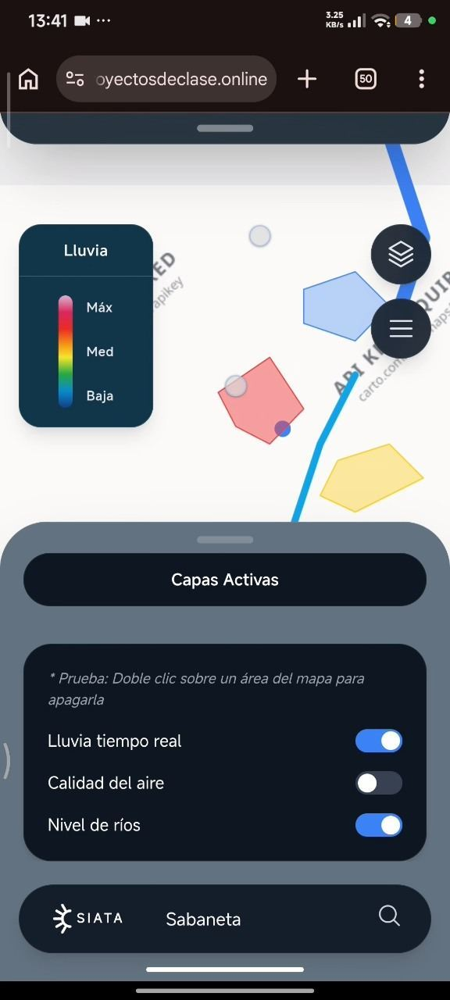
DestacadoSIATA Geoportal Ciudadanos
La mayoría ni siquiera sabe que este portal ciudadano del clima existe.
Cinco personas rediseñamos el portal de clima y riesgo de Medellín. Hicimos las entrevistas juntos y yo construí el prototipo.
- Entrevistas con usuarios
- Lean UX
- Prototipado (Figma, HTML)
- Redacción UX
- Pruebas de usabilidad
-
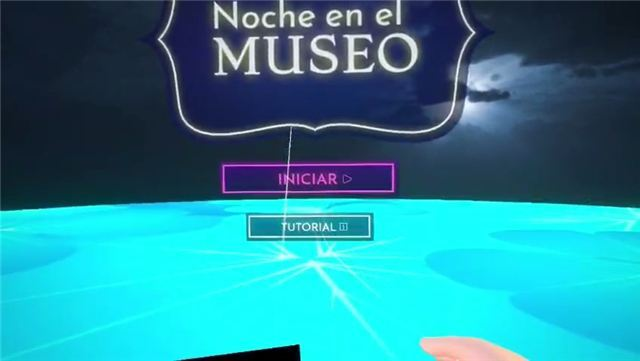
DestacadoUna noche en el museo
Una noche de VR en el museo, hecha para correr en Meta Quest 3.
Fui la desarrolladora líder de Unity de un equipo de seis, y convertí nuestro diseño de una página en una versión funcional.
- Desarrollo en Unity
- Interacción en VR
- Colaboración en GitHub
- Planeación de proyecto
- Narrativa en VR
-
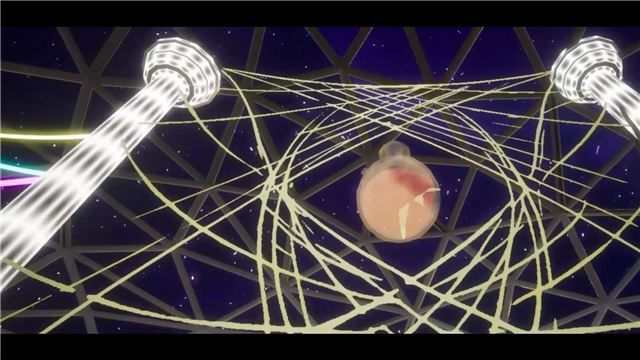
DestacadoNuri's Greenhouse
Un mundo de VR entero, hecho sola, en un motor recién conocido.
Mi primer proyecto en Unreal tras tres semestres en Unity: un entorno individual en VR para el VR Studio de VUW.
- Unreal Engine
- Narrativa ambiental
- Audio espacial
- Diseño de niveles de VR
-
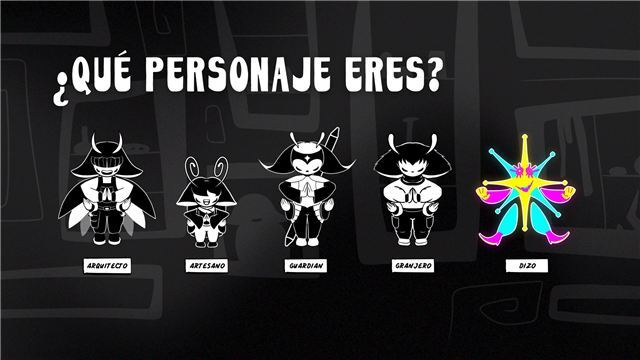
DestacadoMeldiria
Un universo se volvió juego, animación, quiz y biblia del mundo.
Proyecto Más Creativo, Inventiva 2024. Lideré el desarrollo en un equipo de seis y construí el Mythos, el Ethos y el Topos del mundo.
- Desarrollo 2D en Unity
- Construcción de mundos
- Redacción técnica
- Narrativa transmedia
- Animación 2D
-
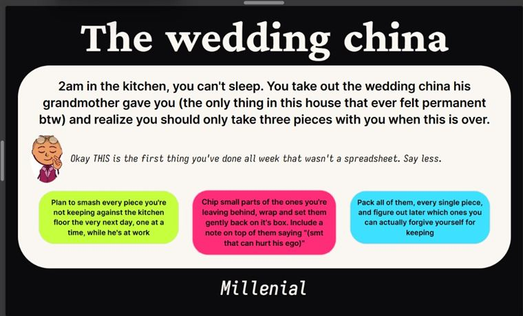
Destacado¿Qué tipo de animal serías durante una crisis de vida?
Cinco elecciones, tres finales posibles, un animal.
Un quiz ramificado hecho sola en Figma Make. Usé Claude y Gemini para probar la lógica, no para diseñarlo.
- Diseño de interacción
- Narrativa ramificada
- Redacción UX
- Figma Make
- Pruebas de lógica con IA
-
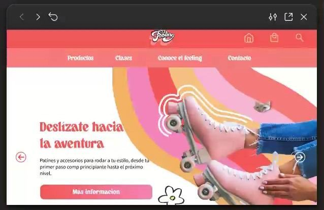
El Feeling
Todas sus clases de patinaje vivían en Instagram. Les dimos un hogar.
Equipo de cinco. Hice la arquitectura de información y diseñé la sección de Clases con su animación.
- Arquitectura de información
- UX/UI en Figma
- UI kit y componentes
- Diseño de interacción
- Diseño responsive
-
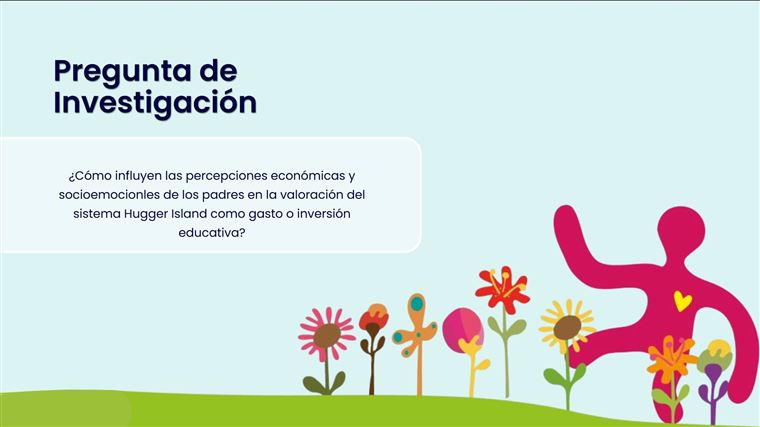
Hugger Island
¿Es un gasto o una inversión? Les preguntamos a los padres.
Investigación de mercados y posicionamiento en un equipo de cinco, presentada a la cliente en 2026.
- Investigación de mercados
- Buyer personas
- Entrevistas y encuestas
- Observación en redes sociales
- Informe y pitch
-
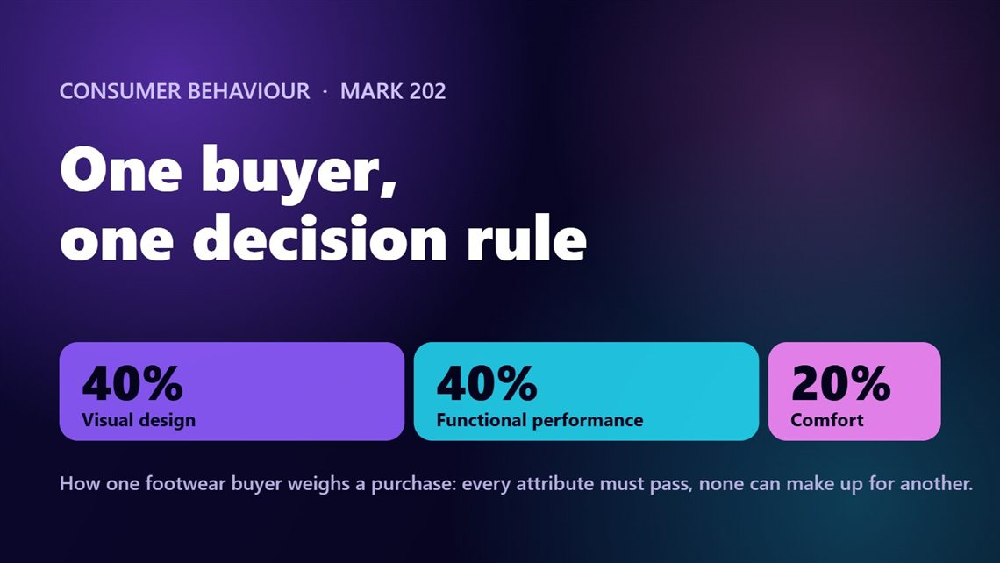
Comportamiento del consumidor: un perfil y una estrategia de marca
¿Cómo decide una compradora? Luego, una marca hecha a su medida.
Un perfil con siete cuestionarios y la estrategia de producto, precio, plaza y promoción que se desprende de él.
- Investigación del consumidor
- Recorrido de decisión
- Persona
- Estrategia de marca
-
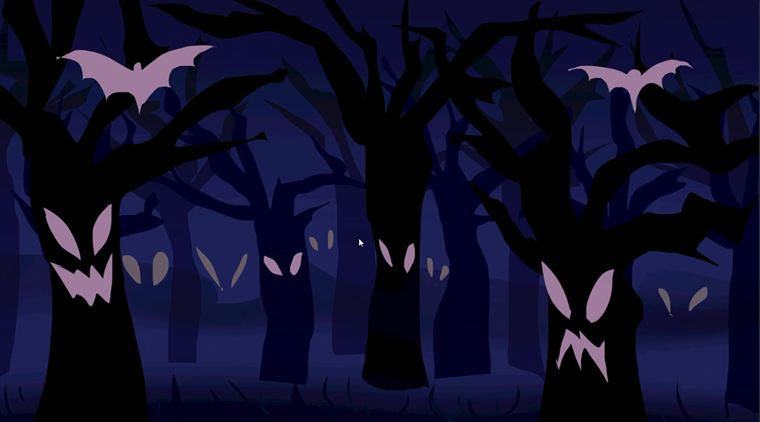
Hansel & Gretel: Blood and Crumbs
Búrlate de la leyenda y luego piérdete en el bosque donde ocurrió.
Lideré el desarrollo e hice la versión final de este juego de terror y supervivencia en Unity, en un equipo de seis.
- Desarrollo 3D en Unity
- Scripts y mecánicas de juego
- NavMesh y NPC
- Depuración
- Diseño de juegos de terror
-
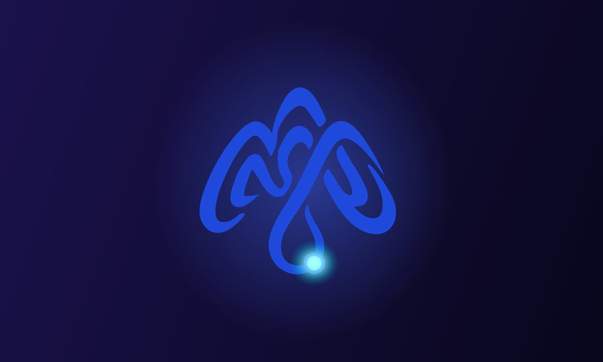
Proyecto personalPregúntale a Mónica y Trabaja conmigo
Mi marca personal, como una pequeña conversación que puedes tener conmigo.
El único proyecto de aquí que hago solo porque quiero. En curso: eliges una pregunta y lees mi respuesta, y luego ves cómo podría trabajar contigo.
- Marca personal
- Redacción UX
- Figma Make
- Diseño de conversaciones
-
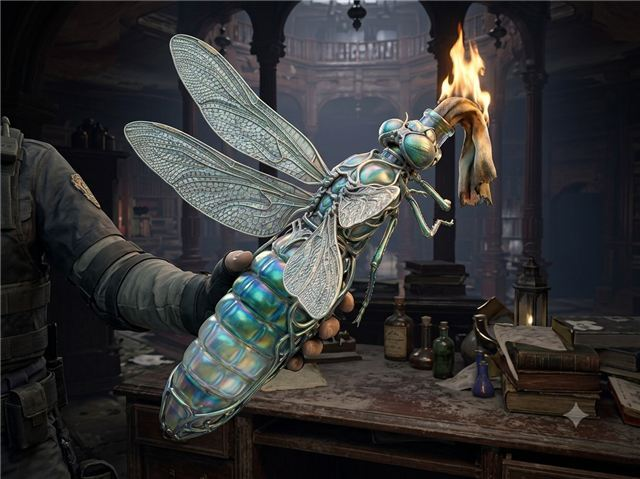
Surviving Amongst Nature
Una receta de prompt que mantiene unida toda una cuadrícula de imágenes.
Un brief de diseño generativo individual: escribí y refiné un prompt repetible en Gemini y luego curé la cuadrícula.
- Ingeniería de prompts
- Imágenes con IA generativa
- Documentación del proceso
- Curaduría visual
-
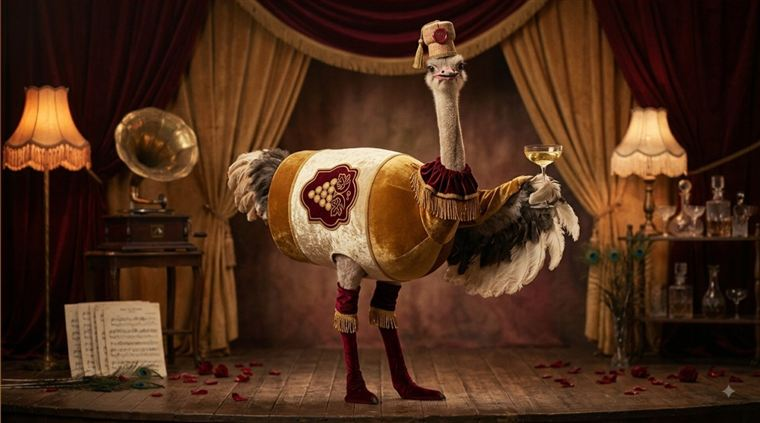
Nature's Embodiment of Wine
Animales en un cabaret, cada uno vestido como una botella de vino.
Un generador de imágenes temático hecho sola: concepto, ingeniería de prompts y curaduría en Gemini.
- Diseño generativo
- Ingeniería de prompts
- Curaduría visual
- Desarrollo de concepto
-
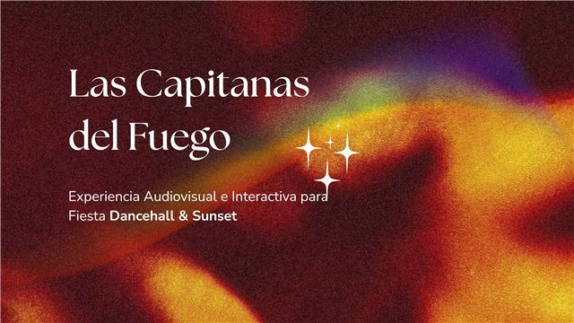
Capitanas del Fuego
Visuales que reaccionan a la música, para una fiesta de Dancehall & Sunset.
Equipo de tres para una DJ de Medellín. Desarrollamos las visuales finales en TouchDesigner y yo se las presenté a ella.
- TouchDesigner
- Visuales reactivas al audio
- Interacción con Kinect
- Presentar a una cliente
-
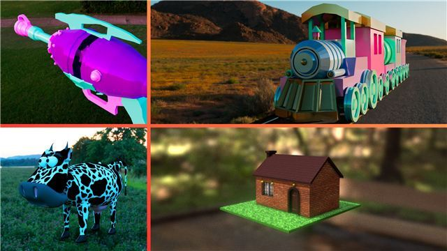
Reel de modelado y animación 3D
De un solo objeto a una animación terminada: mi proceso 3D.
Trabajos de curso en Maya, más iluminación, renderizado y sonido en una animación de un equipo de seis.
- Modelado 3D (Maya)
- Rigging básico
- Animación
- Iluminación y renderizado
- Sonido y música
Semilleros de investigación
Proyectos de investigación en los que participé en EAFIT, paralelos a mi carrera (semilleros de investigación). No fueron parte de ningún curso, por eso viven aparte de los proyectos de arriba.
-
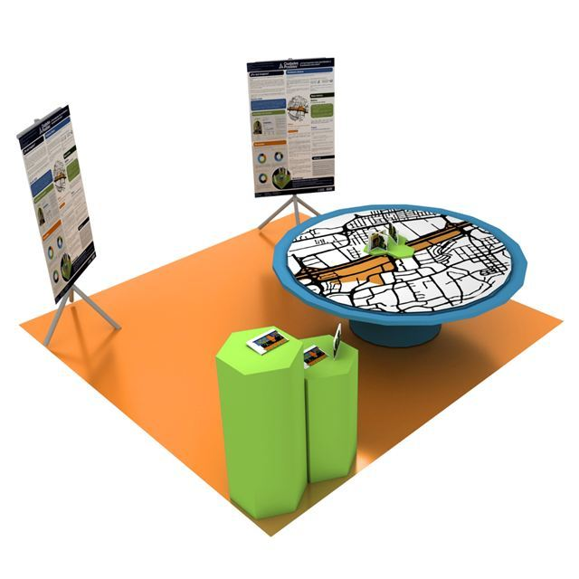
Semillero de investigación · Semillero Cosmogénesis
Ciudades Posibles
¿Cómo logras que el espacio público se sienta de todos?
Diseño especulativo de diez personas en el Distrito SUR de Medellín. Codiseñé las piezas hexagonales, entrevisté con alguien del equipo e hice la guía de piso.
- Diseño especulativo
- Encuestas cualitativas
- Prototipado participativo
- Entrevistas
- Diseño de pósters
-
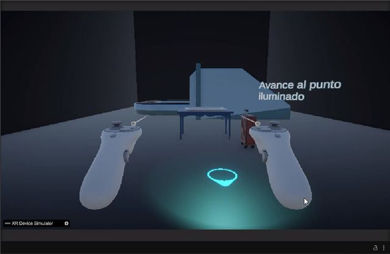
Semillero de investigación · Universidad EAFIT · en curso
VR y emociones: investigación
¿Pueden las emociones en VR cambiar qué tan bien piensas?
Una de tres desarrolladoras de un estudio en curso. Investigué la háptica y luego construí el tutorial de bienvenida y el chequeo de emociones.
- Unity
- Háptica
- Bienvenida en VR
- Cuestionario de emociones
- GitHub
Experiencia profesional
Asistente de comunicaciones (Monitora Administrativa)
Entré como diseñadora gráfica y terminé siendo la mano derecha de la líder de comunicaciones, en un equipo que siempre tenía que adaptarse rápido.
- Diseñadora principal de las publicaciones, historias y piezas de eventos de Instagram de la Escuela, tanto estáticas como animadas. Trabajé dentro de los lineamientos de marca existentes de la Escuela para crear diseños nuevos; yo no creé los lineamientos.
- Escribí guiones técnicos, visuales y narrativos para vídeos y eventos.
- Cubrí eventos en vivo en X, en español e inglés. Éramos gente de diseño cubriendo eventos de finanzas, economía y política que casi no entendíamos, así que usamos IA para asegurarnos de no equivocarnos con la información. Llegaba unos diez minutos antes del comienzo y buscaba los perfiles de X de los panelistas (nombre completo y cargo), el nombre y el propósito del evento y con quién se hacía. Durante el evento recogía los comentarios del público, los traducía con IA, los reescribía con el tono de la Escuela para que cupieran en el límite de caracteres de X y los publicaba en orden, con las fotos que una colega enviaba en vivo por un enlace de Drive (descargadas en buena calidad) emparejadas con el contexto que habíamos preparado con IA.
- Administré el calendario de contenido, asigné y revisé el trabajo del equipo, y escribí textos.
- Inicié el Boletín Especial, un boletín con las noticias más interesantes de la Escuela cada mes (pasó de salir cada tres meses a salir casi cada mes). Yo era la única persona a cargo: investigaba las historias, las reescribía con el tono de voz de EAFIT y de la Escuela, diseñaba el boletín y lo enviaba por correo a una lista específica de personas de la Escuela desde la cuenta principal de correo de la Escuela.
- Ayudé a poner en práctica una estrategia mensual de contenido, cuya idea principal vino de la líder de comunicaciones, para dar visibilidad a las mujeres en finanzas, economía y ciencias políticas: charlas, eventos y la campaña #YoHagoParte. Con una compañera diseñé su contenido de Instagram, y en un momento lideré ese trabajo.
- Codiseñé una estrategia basada en personajes para darle a la Escuela una voz más personal en línea.
Habilidades
Lo que puedo hacer como diseñadora interactiva, agrupado por área. Vienen de lo que hice en mis proyectos y trabajos, y de lo que aprendí junto a mis compañeros.
UX e investigación de usuarios
- Entrevistas con usuarios
- Encuestas y cuestionarios
- Personas y proto-personas
- Lean UX y design thinking
- Recorridos cognitivos y pruebas de árbol
- Pruebas de usabilidad (Hotjar, Maze)
- Arquitectura de información
- Investigación de mercados y observación
- Síntesis de resultados, con apoyo de IA
Interacción y diseño de producto
- Diseño UI/UX en Figma
- Prototipos interactivos (Figma, Figma Make, HTML)
- Flujos de interacción y retroalimentación
- UI kits y componentes
- Diseño responsive
- Diseño de apps móviles
- Gamificación
- Redacción UX
Desarrollo de juegos y experiencias interactivas
- Unity (2D y 3D)
- Unreal Engine
- Scripts y mecánicas de juego
- NavMesh, NPC y partículas
- Depuración
- Control de versiones con GitHub
- Liderar una versión hasta la entrega
- Planeación y cronogramas de desarrollo
VR e inmersión
- Diseño de interacción en VR (Meta Quest 3)
- Retroalimentación háptica (investigada)
- Diseño de bienvenida y tutoriales
- Chequeos de emociones dentro de la experiencia
- Narrativa ambiental
- Audio espacial
- Diseño de niveles y distribución en VR
Narrativa y construcción de mundos
- Construcción de mundos (Mythos, Ethos, Topos)
- Narrativa ramificada y finales
- Narrativa transmedia
- Biblias de mundo y redacción técnica
- One-pagers de juegos y experiencias
- Guiones para vídeo y eventos
Diseño generativo y con IA
- Ingeniería de prompts y diseño de recetas
- Sistemas generativos de imágenes
- Scripts y depuración con ayuda de IA
- Pruebas de lógica con ayuda de IA
- Documentar abiertamente el proceso y el uso de IA
- Claude, ChatGPT, Gemini, Midjourney
3D, movimiento y diseño visual
- Maya (modelado, rigging básico, animación)
- Iluminación y renderizado
- Diseño de sonido y música para animación
- Substance 3D Painter
- TouchDesigner y visuales reactivas al audio
- Interacción con Kinect y cámara
- After Effects y Animate
- Illustrator, Photoshop, Affinity, Canva
- Recursos vectoriales de UI
- Gráficos para redes sociales, estáticos y animados
Comunicación y colaboración
- Presentar a clientes reales
- Presentar a profesores y clientes
- Calendarios de contenido y redacción de textos
- Producción de boletines: investigación, tono de voz institucional, diseño y envío por correo
- Cobertura de eventos en vivo en español e inglés
- Revisión y coordinación del trabajo del equipo
- Trabajo en equipos de tres a diez personas
- Planeación de proyectos
- Bilingüe: español e inglés
Sobre mí
Mónica Arcila Larrea
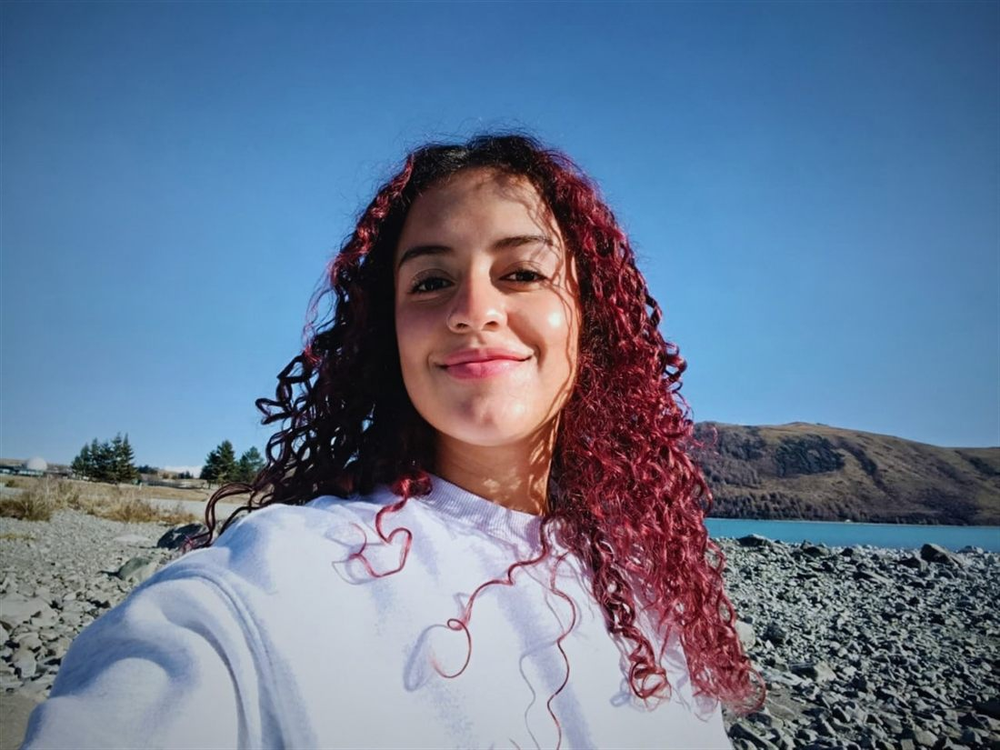
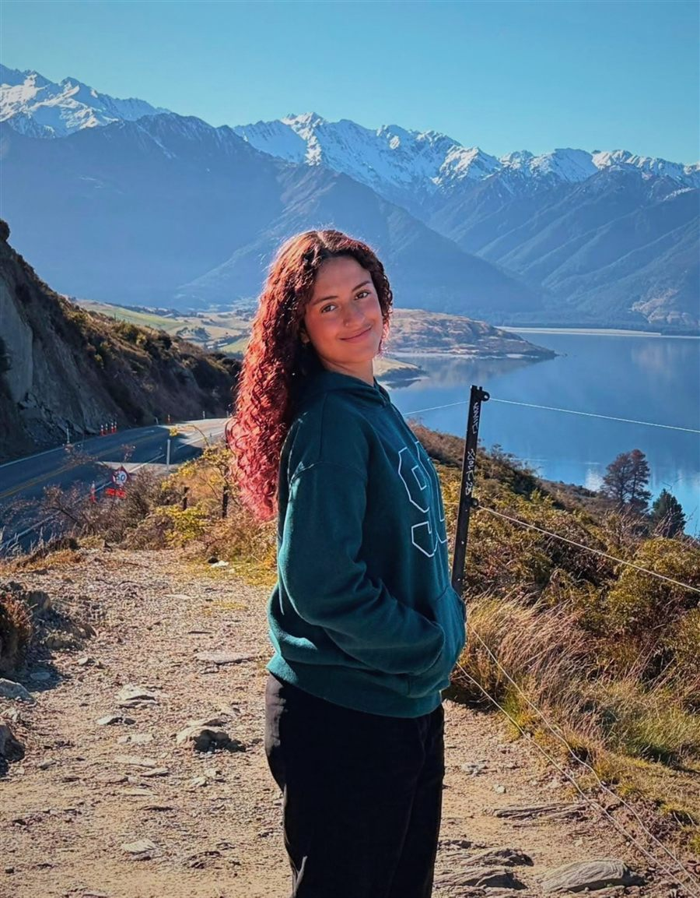
Soy diseñadora interactiva y vivo en Wellington, Nueva Zelanda, especializada en implementación de UI, sistemas de diseño y flujos de diseño con IA. Mi camino me ha llevado por seis semestres en EAFIT (Medellín, Colombia) y, este año, por un intercambio en Diseño de Medios Interactivos en Te Herenga Waka — Victoria University of Wellington.
Para mí, diseñar es una colaboración: me gusta mostrar el pensamiento detrás de los píxeles, la investigación, los wireframes, los primeros borradores torpes, y no solo la pantalla final pulida. Mi trabajo abarca investigación UX, prototipos interactivos, diseño de juegos, realidad virtual y diseño generativo y asistido por IA, y ahora busco una práctica de diseño interactivo en Wellington o Auckland.
Herramientas y software
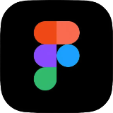
Figma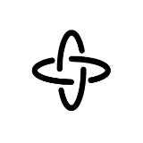
Figma Make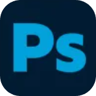
Adobe Photoshop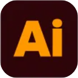
Adobe Illustrator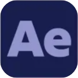
Adobe After Effects- Adobe Animate
- Adobe Audition
- Affinity
- Canva
- Maya
- Substance 3D Painter
- Unity
- Unreal Engine
- TouchDesigner
- Visual Studio Code
- Google Sites
- Lovable
- Claude
- ChatGPT
- Gemini
- Midjourney
- Meta Quest 3 / Oculus
- HTML & CSS
- C++
- Python
- Arduino & Wokwi